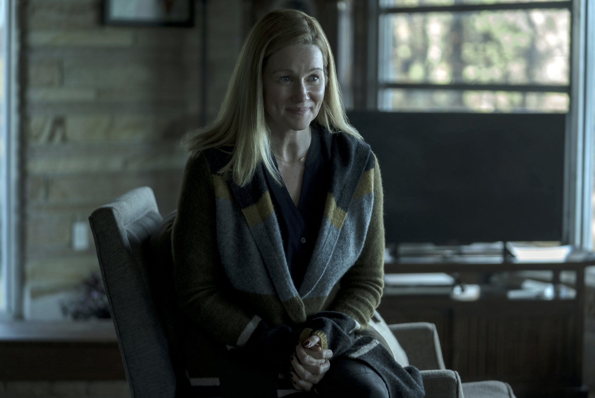
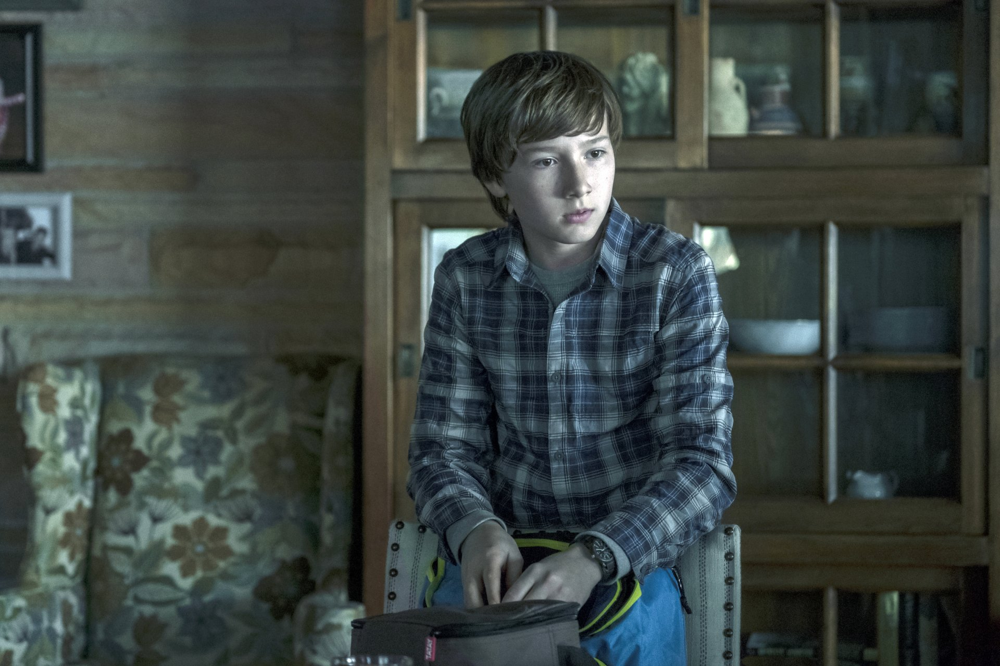
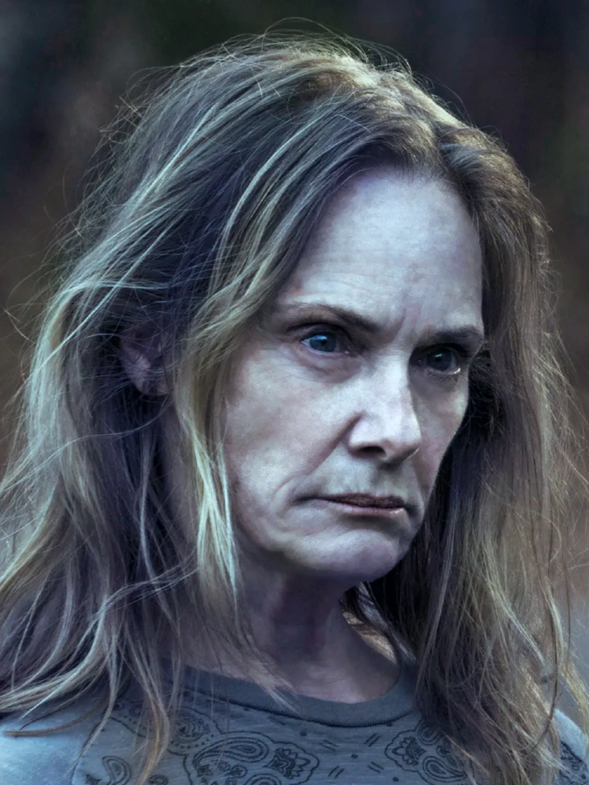
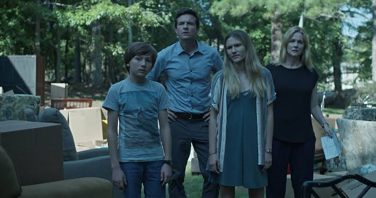
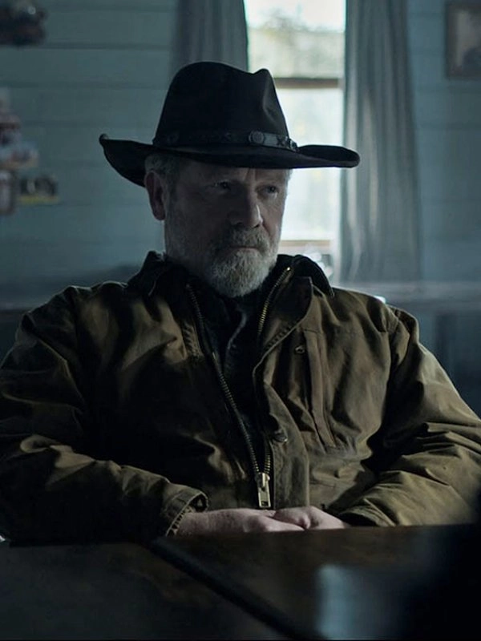
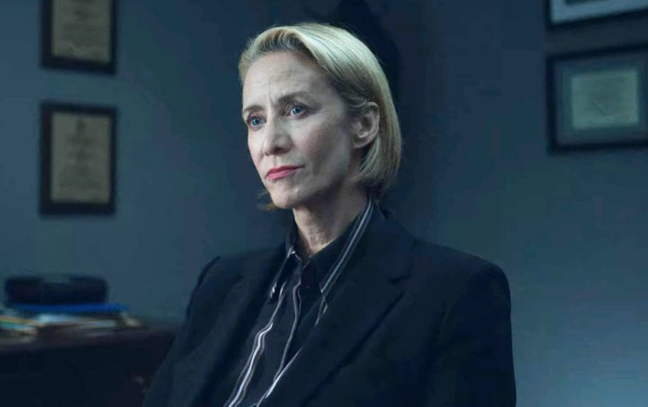
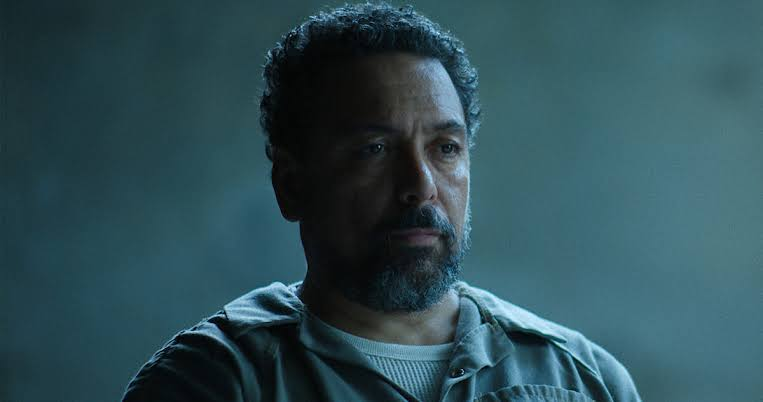
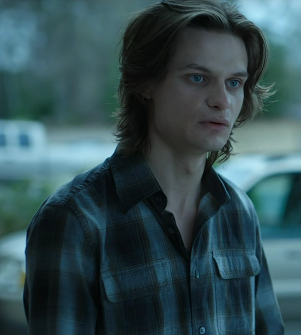

Marty Byrde
Jason Bateman
Asesor financiero. Calcula todo y casi siempre acierta, pero cada acierto lo mete un paso mas adentro.
Quien es quien en el lago de los Ozarks.
Jason Bateman
Asesor financiero. Calcula todo y casi siempre acierta, pero cada acierto lo mete un paso mas adentro.

Laura Linney
Ex operadora politica. Empieza acompanando las decisiones de Marty y termina tomando las que el no se anima a tomar.

Julia Garner
Crecio en el parque de casas rodantes y aprendio a robar antes que a confiar. La mas inteligente del lago y la que menos tiene para perder.

Sofia Hublitz
La hija mayor. Es la primera de los chicos en entender de que vive el padre, y la primera en decidir que hacer con eso.

Skylar Gaertner
El menor. Aprende contabilidad y sociedades pantalla a una edad en que deberia estar preocupado por otra cosa.

Lisa Emery
Duena de las tierras y del cultivo de amapola. Estaba en el lago mucho antes que los Byrde y no piensa negociar nada.


Peter Mullan
El marido de Darlene. Es el que negocia, aunque las decisiones que importan las toma ella.

Janet McTeer
La abogada del cartel. Es el puente entre los Byrde y Navarro, y nunca queda claro de que lado juega.

Felix Solis
El jefe del cartel. No aparece seguido, pero todas las decisiones terminan pasando por su mesa.

Tom Pelphrey
El hermano de Wendy. Es lo unico en toda la serie que no se puede administrar ni calcular.

Charlie Tahan
Primo de Ruth. El unico de la familia que queria salir del lago en vez de conquistarlo.

Jordana Spiro
La duena original del Blue Cat. La primera persona a la que Marty le compra el silencio.